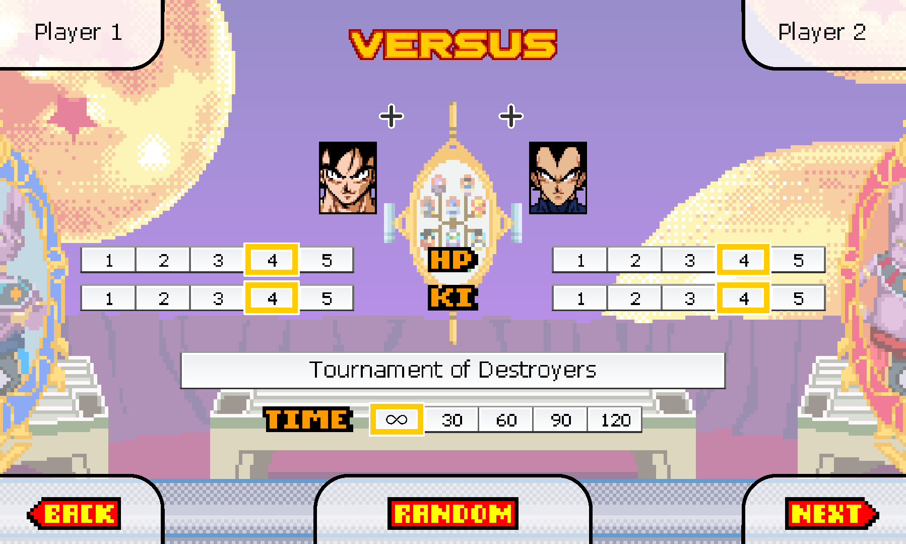
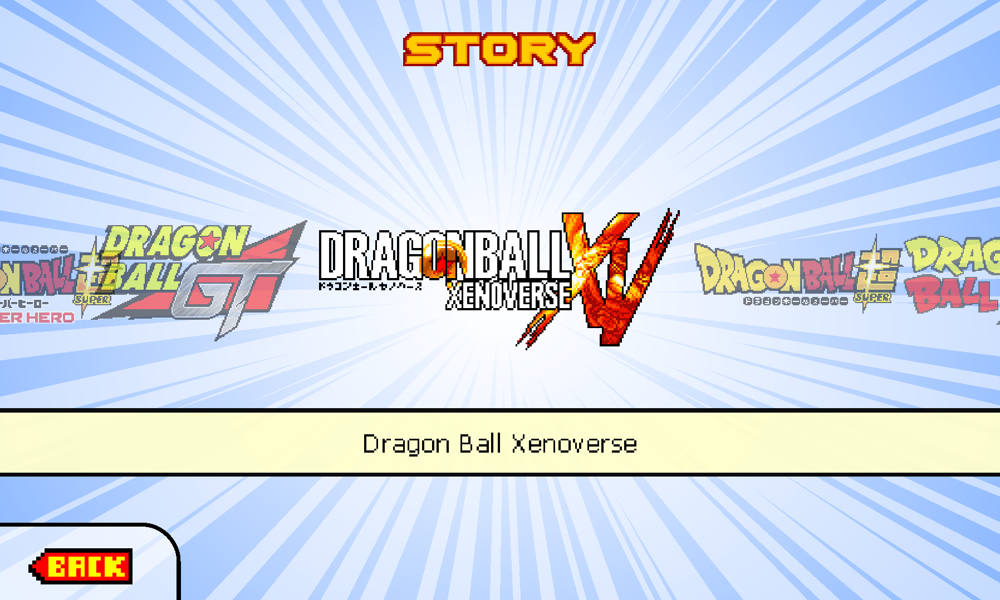
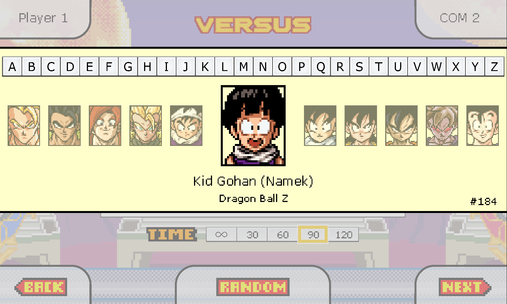
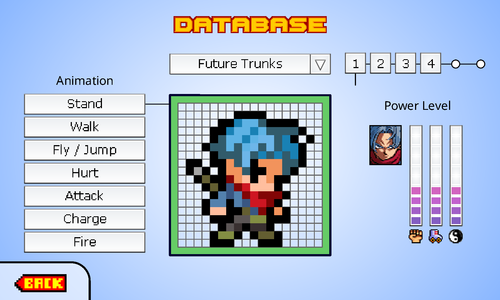
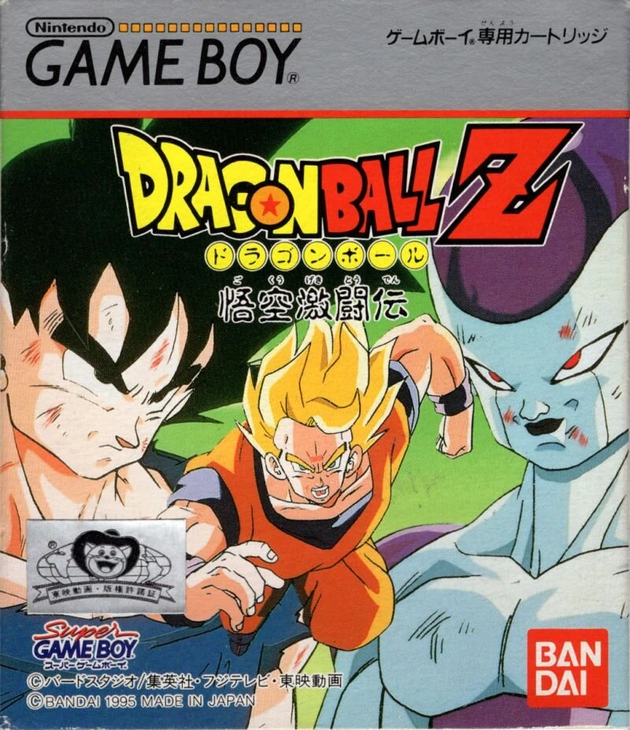
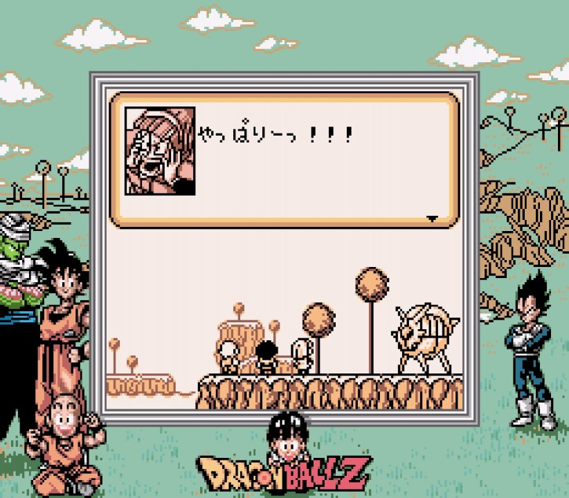

Modo Versus
Enfrente outros jogadores em batalhas épicas 1x1. Escolha seu guerreiro e prove quem é o mais forte do universo!
O DragonBallDevolutionInfo é o seu portal de referência sobre o famoso jogo Dragon Ball Devolution. Aqui você encontra informações detalhadas sobre modos de jogo, personagens desbloqueáveis, estratégias de combate e as últimas novidades do universo Devolution. Seja bem-vindo, guerreiro!

Enfrente outros jogadores em batalhas épicas 1x1. Escolha seu guerreiro e prove quem é o mais forte do universo!

Reviva as sagas mais icônicas de todo universo de Dragon Ball: Saiajin, Freeza, Cell e Majin Boo com mecânicas únicas.

Mais de 250 personagens disponíveis, entre heróis, vilões e transformações exclusivas.

Consulte atributos, poderes e curiosidades de cada personagem. Um guia completo para dominar cada luta.
A criação do jogo começou em 1999. O objetivo era homenagear Akira Toriyama pelo trabalho colossal que ele realizou desenhando os 42 volumes da série Dragon Ball, de 1984 a 1995. O estilo gráfico foi inspirado no jogo de RPG Dragon Ball Z Goku Gekitōden para Game Boy, cujo design de personagens SD (Super Deformed) agradou muito ao criador, que planejava fazer um jogo de ação. O desenvolvimento começou ainda no ensino médio, em uma calculadora TI-89, programada em linguagem assembly — até que as dificuldades técnicas forçaram uma pausa. Mas a ideia nunca foi abandonada.
Em 2004, o projeto foi portado para PC utilizando Flash 5 e ActionScript, dando origem ao "Dragon Ball Z Tribute". Uma das primeiras versões jogáveis foi publicada no Newgrounds — a única vez que o jogo foi lançado oficialmente em um site externo. Todos os outros sites que o hospedam o obtiveram sem autorização.
Em 2011, o jogo passou a se chamar "Dragon Ball Z Devolution" e entrou em um ciclo de atualizações regulares, ganhando em cores, música, história e novos lutadores. Pessoas talentosas se juntaram ao projeto ao longo dessa jornada, com destaque para Darvel, responsável por um trabalho incrível na trilha sonora.
Em 2019, após abranger tantas sagas e personagens diferentes, o jogo adotou seu nome atual: simplesmente "Dragon Ball Devolution". O fim do Flash em 2021 não mudou nada: o jogo passou a rodar no Ruffle, o emulador de Flash, sem qualquer impacto para os jogadores.


Dragon Ball Devolution é gratuito, roda direto no navegador e não precisa de instalação. Clique abaixo e comece a lutar agora mesmo!
▶ Jogar Dragon Ball Devolution Abre em uma nova aba — site oficial do jogo